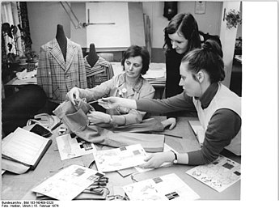

Our firm image
2nd pic

Fashion design is the art of applying design, aesthetics, clothing construction and natural beauty to clothing and its accessories. It is influenced by culture and different trends, and has varied over time and place.
A fashion designer creates clothing, including dresses, suits, pants, and skirts, and accessories like shoes and handbags, for consumers. He or she can specialize in clothing, accessory, or jewelry design, or may work in more than one of these areas.
Most French fashion houses are in Paris, which is the capital of French fashion. Traditionally, French fashion is chic and stylish, defined by its sophistication, cut, and smart accessories. French fashion is internationally acclaimed.
The most notable luxury houses are Loewe and Balenciaga. Famous designers include Manolo Blahnik, Elio Berhanyer, Cristóbal Balenciaga, Paco Rabanne, Adolfo Domínguez, Manuel Pertegaz, Jesús del Pozo, Felipe Varela and Agatha Ruiz de la Prada.
Most Japanese fashion houses are in Tokyo. The Japanese look is loose and unstructured (often resulting from complicated cutting), colours tend to the sombre and subtle, and richly textured fabrics. Famous Japanese designers include Kenzo Takada, Issey Miyake, Yohji Yamamoto and Rei Kawakubo.